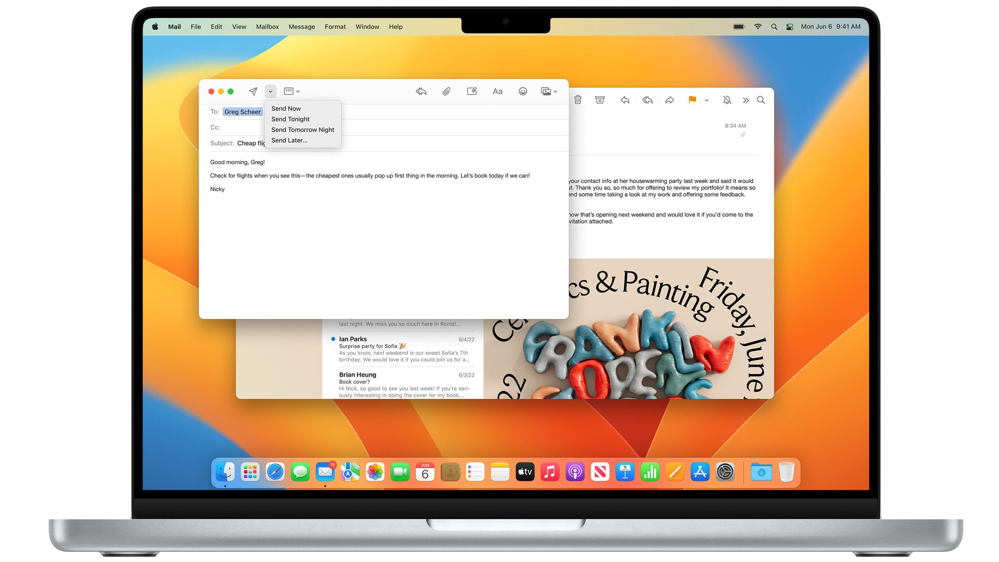
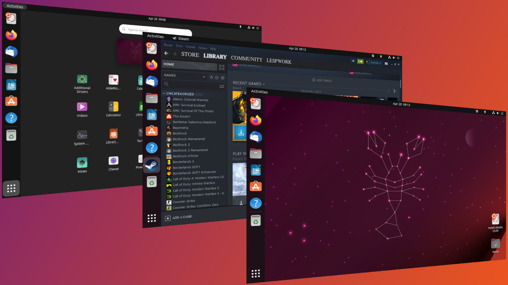

MacOs
Mac OS X was originally presented as the tenth major version of Apple's operating system for Macintosh computers; until 2020, versions of macOS retained the major version number "10". The letter "X" in Mac OS X's name refers to the number 10, a Roman numeral, and Apple has stated that it should be pronounced "ten" in this context. However, it is also commonly pronounced like the letter "X".[18][19] Previous Macintosh operating systems (versions of the classic Mac OS) were named using Arabic numerals, as with Mac OS 8 and Mac OS 9.[20][18] As of 2020 and 2021, Apple reverted to Arabic numeral versioning for successive releases, macOS 11 Big Sur and macOS 12 Monterey, as they have done for the iPhone 11 and iPhone 12 following the iPhone X. The first version of Mac OS X, Mac OS X Server 1.0, was a transitional product, featuring an interface resembling the classic Mac OS, though it was not compatible with software designed for the older system. Consumer releases of Mac OS X included more backward compatibility. Mac OS applications could be rewritten to run natively via the Carbon API; many could also be run directly through the Classic Environment with a reduction in performance. The consumer version of Mac OS X was launched in 2001 with Mac OS X 10.0. Reviews were variable, with extensive praise for its sophisticated, glossy Aqua interface, but criticizing it for sluggish performance.[21] With Apple's popularity at a low, the maker of FrameMaker, Adobe Inc., declined to develop new versions of it for Mac OS X.[22] Ars Technica columnist John Siracusa, who reviewed every major OS X release up to 10.10, described the early releases in retrospect as "dog-slow, feature poor" and Aqua as "unbearably slow and a huge resource hog".[21][23][24] Apple rapidly developed several new releases of Mac OS X.[25] Siracusa's review of version 10.3, Panther, noted "It's strange to have gone from years of uncertainty and vaporware to a steady annual supply of major new operating system releases."[26] Version 10.4, Tiger, reportedly shocked executives at Microsoft by offering a number of features, such as fast file searching and improved graphics processing, that Microsoft had spent several years struggling to add to Windows with acceptable performance.[27] As the operating system evolved, it moved away from the classic Mac OS, with applications being added and removed.[28] Considering music to be a key market, Apple developed the iPod music player and music software for the Mac, including iTunes and GarageBand.[29] Targeting the consumer and media markets, Apple emphasized its new "digital lifestyle" applications such as the iLife suite, integrated home entertainment through the Front Row media center and the Safari web browser. With increasing popularity of the internet, Apple offered additional online services, including the .Mac, MobileMe and most recently iCloud products. It later began selling third-party applications through the Mac App Store. Newer versions of Mac OS X also included modifications to the general interface, moving away from the striped gloss and transparency of the initial versions. Some applications began to use a brushed metal appearance, or non-pinstriped title bar appearance in version 10.4.[30] In Leopard, Apple announced a unification of the interface, with a standardized gray-gradient window style.[31][32] In 2006, the first Intel Macs released used a specialized version of Mac OS X 10.4 Tiger.[33] A key development for the system was the announcement and release of the iPhone from 2007 onwards. While Apple's previous iPod media players used a minimal operating system, the iPhone used an operating system based on Mac OS X, which would later be called "iPhone OS" and then iOS. The simultaneous release of two operating systems based on the same frameworks placed tension on Apple, which cited the iPhone as forcing it to delay Mac OS X 10.5 Leopard.[34] However, after Apple opened the iPhone to third-party developers its commercial success drew attention to Mac OS X, with many iPhone software developers showing interest in Mac development.[35] In 2007, Mac OS X 10.5 Leopard was the sole release with universal binary components, allowing installation on both Intel Macs and select PowerPC Macs.[36] It is also the final release with PowerPC Mac support. Mac OS X 10.6 Snow Leopard was the first version of Mac OS X to be built exclusively for Intel Macs, and the final release with 32-bit Intel Mac support.[37] The name was intended to signal its status as an iteration of Leopard, focusing on technical and performance improvements rather than user-facing features; indeed it was explicitly branded to developers as being a 'no new features' release.[38] Since its release, several OS X or macOS releases (namely OS X Mountain Lion, OS X El Capitan, macOS High Sierra, and macOS Monterey) follow this pattern, with a name derived from its predecessor, similar to the 'tick–tock model' used by Intel. In two succeeding versions, Lion and Mountain Lion, Apple moved some applications to a highly skeuomorphic style of design inspired by contemporary versions of iOS while simplifying some elements by making controls such as scroll bars fade out when not in use.[23] This direction was, like brushed metal interfaces, unpopular with some users, although it continued a trend of greater animation and variety in the interface previously seen in design aspects such as the Time Machine backup utility, which presented past file versions against a swirling nebula, and the glossy translucent dock of Leopard and Snow Leopard.[39] In addition, with Mac OS X 10.7 Lion, Apple ceased to release separate server versions of Mac OS X, selling server tools as a separate downloadable application through the Mac App Store. A review described the trend in the server products as becoming "cheaper and simpler... shifting its focus from large businesses to small ones."[40.
Ubuntu
A default installation of Ubuntu contains a wide range of software that includes LibreOffice, Firefox, Thunderbird, Transmission, and several lightweight games such as Sudoku and Mines.[44][45] Many additional software packages are accessible from the built in Ubuntu Software (previously Ubuntu Software Center) as well as any other APT-based package management tools. Many additional software packages that are no longer installed by default, such as Evolution, GIMP, Pidgin, and Synaptic, are still accessible in the repositories and installable by the main tool or by any other APT-based package management tool. Cross-distribution snap packages and flatpaks are also available,[46] that both allow installing software, such as some of Microsoft's software, in most of the major Linux operating systems (such as any currently supported Ubuntu version and in Fedora). The default file manager is GNOME Files, formerly called Nautilus. All of the application software installed by default is free software. In addition, Ubuntu redistributes some hardware drivers that are available only in binary format, but such packages are clearly marked in the restricted component. Ubuntu aims to be secure by default.[48][49] User programs run with low privileges and cannot corrupt the operating system or other users' files. For increased security, the sudo tool is used to assign temporary privileges for performing administrative tasks, which allows the root account to remain locked and helps prevent inexperienced users from inadvertently making catastrophic system changes or opening security holes.[50] Polkit is also being widely implemented into the desktop. Most network ports are closed by default to prevent hacking.[51] A built-in firewall allows end-users who install network servers to control access. A GUI (GUI for Uncomplicated Firewall) is available to configure it.[52] Ubuntu compiles its packages using GCC features such as PIE and buffer overflow protection to harden its software.[53] These extra features greatly increase security at the performance expense of 0.01% in 64-bit.[54] Ubuntu also supports full disk encryption[55] as well as encryption of the home and private directories.[56]
Windows 11
Windows 11 is the latest major release of Microsoft's Windows NT operating system, released on October 5, 2021. It is a free upgrade to its predecessor, Windows 10 (2015), and is available for any Windows 10 devices that meet the new Windows 11 system requirements. Windows 11 features major changes to the Windows shell influenced by the canceled Windows 10X, including a redesigned Start menu, the replacement of its "live tiles" with a separate "Widgets" panel on the taskbar, the ability to create tiled sets of windows that can be minimized and restored from the taskbar as a group, and new gaming technologies inherited from Xbox Series X and Series S such as Auto HDR and DirectStorage on compatible hardware. Internet Explorer (IE) has been replaced by the Chromium-based Microsoft Edge as the default web browser, like its predecessor, Windows 10, and Microsoft Teams is integrated into the Windows shell. Microsoft also announced plans to allow more flexibility in software that can be distributed via the Microsoft Store and to support Android apps on Windows 11 (including a partnership with Amazon to make its app store available for the function). Citing security considerations, the system requirements for Windows 11 were increased over Windows 10. Microsoft only officially supports the operating system on devices using an eighth-generation Intel Core CPU or newer (with some minor exceptions), a second-generation AMD Ryzen CPU or newer, or a Qualcomm Snapdragon 850 ARM system-on-chip or newer, with UEFI secure boot and Trusted Platform Module (TPM) 2.0 supported and enabled (although Microsoft may provide exceptions to the TPM 2.0 requirement for OEMs). While the OS can be installed on unsupported processors, Microsoft does not guarantee the availability of updates. Windows 11 removed support for 32-bit x86 and ARM CPUs and devices that use BIOS firmware. Windows 11 received a mixed reception at launch. Pre-release coverage of the operating system focused on its stricter hardware requirements, with discussions over whether they were legitimately intended to improve the security of Windows or as a ploy to upsell customers to newer devices and over the e-waste associated with the changes. Upon release, it was praised for its improved visual design, window management, and stronger focus on security, but was criticized for various modifications to aspects of its user interface that were seen as worse than its predecessor; some were seen as an attempt to dissuade users from switching to competing applications.[16] As of April 2023, Windows 11, at 23% worldwide[17][18] is the 2nd most popular Windows version in use, with its predecessor Windows 10 at 3.1 times the market share. Across all platforms, Windows 11 runs on 6.4% of personal computing devices.